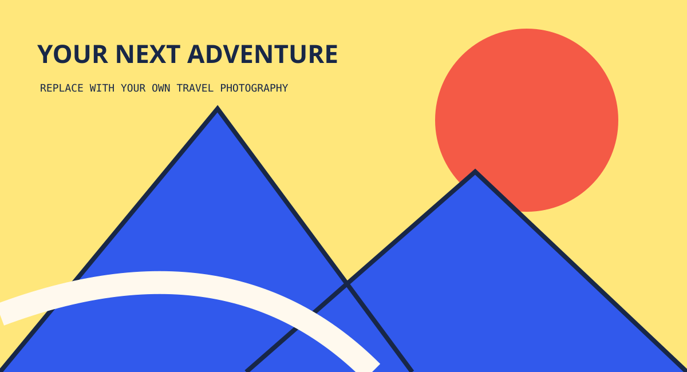

{{START}} — {{END}} / {{TRAVELERS}} 人同行
{{TITLE}}
目的地：{{DESTINATION}}。从这里，把想象变成可以出发的路线。

这次怎么走？
这是可编辑的起始模板。用 vibe coding 填入经过核实的景点、美食、住处与图片；路线由你定义。
吃什么 / 住哪里
添加店名、真实片区、四人配置、预算及资料出处。日期房价与展示价分开标注。
{{START}} — {{END}} / {{TRAVELERS}} 人同行
目的地：{{DESTINATION}}。从这里，把想象变成可以出发的路线。

这是可编辑的起始模板。用 vibe coding 填入经过核实的景点、美食、住处与图片；路线由你定义。
添加店名、真实片区、四人配置、预算及资料出处。日期房价与展示价分开标注。